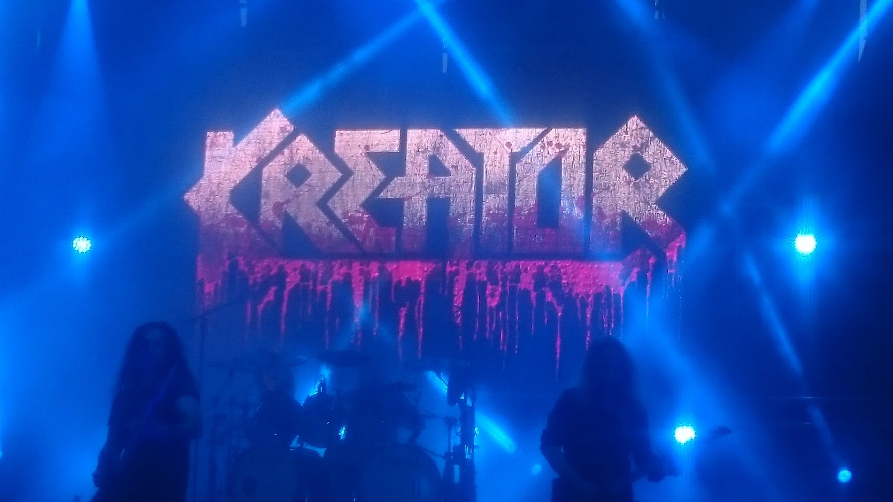

|  | KoncertekA koncertezést már gyerekkoromban elkezdtem, így nem csoda hogy közel áll a szívemhez. Szüleim előszeretettel hallgattak rock/metal zenét, és koncertekre is jártak, ahova sokszor engem is magukkal vittek, már négy éves koromtól kezdve. Ez erősen befolyásolta a zenei ízlésemet. Az évek múltán viszont már nem ők visznek engem koncertekre, hanem sokszor én másokat. Ennek ellenére még mindig van, hogy a családommal megyek, amiket nagyon élvezek, de rajtuk kívül sokat járok edzőtársaimmal és barátaimmal is. Koncerteken a viselkedés elég társaságfüggő, de gondolom mondani se kell, hogy maga az élmény mindig ugyan olyan jó. |